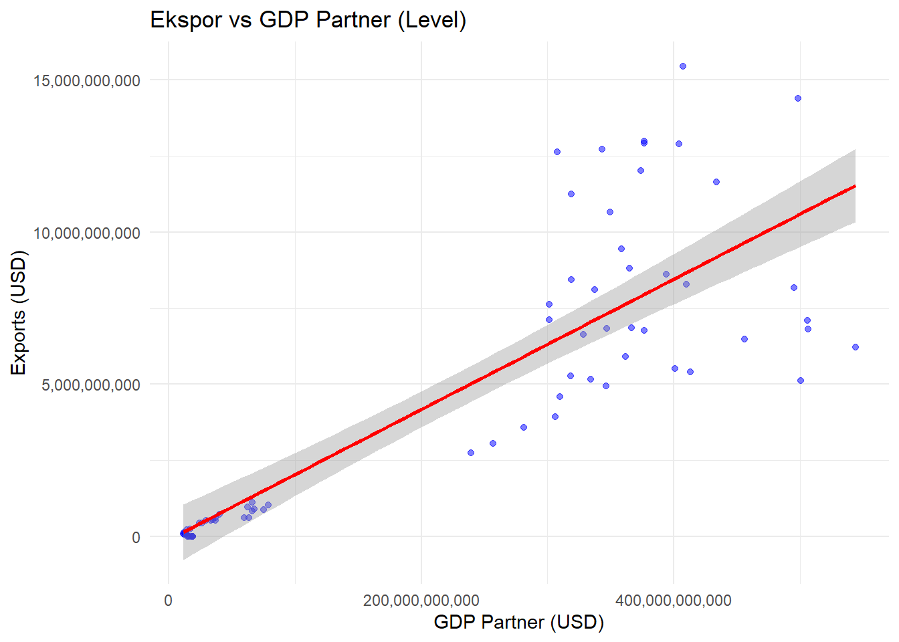
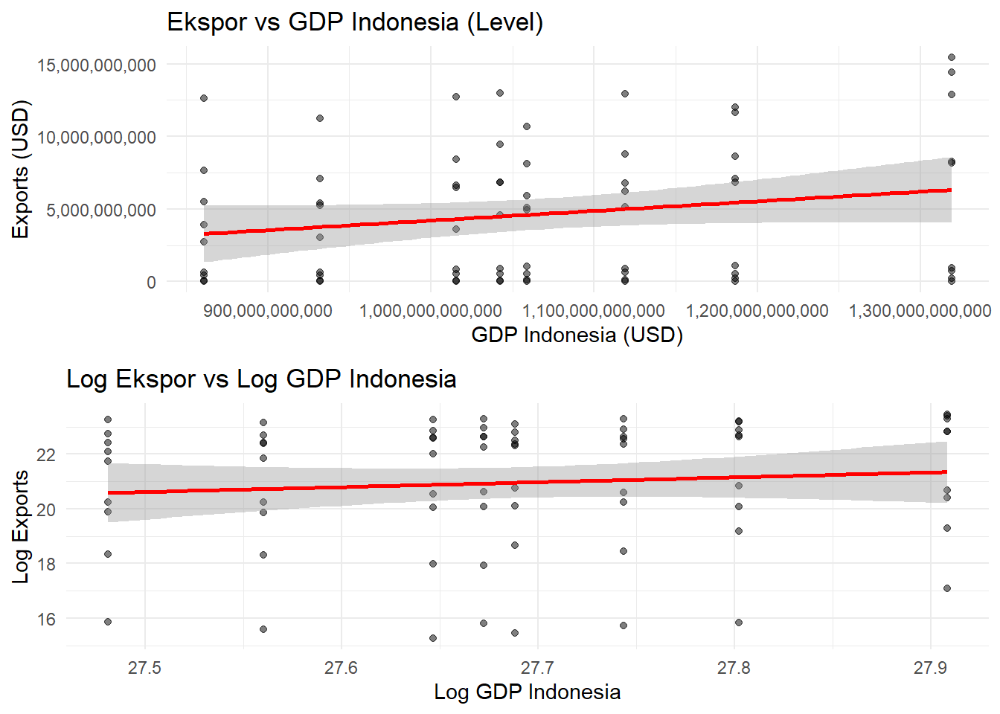
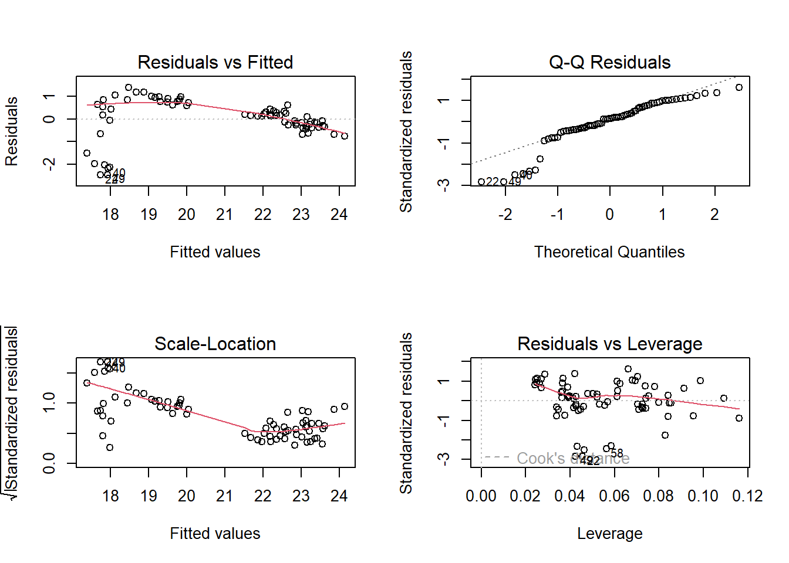

library(wbstats) # Untuk data World Bank
library(tidyverse) # Data manipulation
library(gravity) # Gravity model utilities
library(readxl) # Membaca Excel
library(plm) # Panel data analysis
library(stargazer) # Reporting regresi
library(lmtest) # Diagnostic tests
library(sandwich) # Robust standard errors
library(ggplot2) # Membuat plot level vs log
library(gridExtra) # Menampilkan multiple plot
library(scales)
library(knitr)
library(kableExtra)Analisis pengaruh PDB Indonesia dan PDB negara mitra dagang ASEAN, serta jarak ekonomi terhadap nilai ekspor Indonesia
Metode Penelitian Politeknik APP Jakarta

1 Pendahuluan
1.1 Latar belakang
Indonesia, sebagai salah satu negara berkembang dengan ekonomi terbesar di Asia Tenggara, memiliki peran penting dalam perdagangan internasional, khususnya di kawasan ASEAN. Perdagangan antarnegara di ASEAN menawarkan peluang besar bagi peningkatan ekspor Indonesia, mengingat hubungan ekonomi yang erat dan perjanjian perdagangan bebas di antara negara-negara anggotanya. Nilai ekspor Indonesia dipengaruhi oleh berbagai faktor, termasuk Produk Domestik Bruto (PDB) domestik, PDB negara mitra dagang, serta jarak ekonomi yang mencerminkan perbedaan tingkat pembangunan dan daya saing antar negara.
Dalam konteks perekonomian global yang semakin terintegrasi, PDB merupakan indikator penting yang mencerminkan kapasitas ekonomi suatu negara untuk memproduksi barang dan jasa. PDB yang tinggi menunjukkan potensi daya beli yang lebih besar, yang dapat mendorong permintaan terhadap produk ekspor. Sementara itu, hubungan perdagangan dengan negara-negara ASEAN, yang merupakan mitra dagang utama Indonesia, menambah kompleksitas analisis ini. Jarak ekonomi, sebagai faktor penghalang dalam perdagangan internasional, juga berperan penting dalam menentukan seberapa efisien dan efektifnya interaksi perdagangan antara Indonesia dan negara-negara tetangganya.
Oleh karena itu, penelitian ini bertujuan untuk mengkaji pengaruh PDB Indonesia, PDB negara-negara mitra dagang ASEAN, dan jarak ekonomi terhadap nilai ekspor Indonesia, sekaligus memberikan pemahaman lebih mendalam mengenai hubungan dagang di kawasan ini.
1.2 Ruang lingkup
Ruang Lingkup Penelitian
Penelitian ini difokuskan pada analisis nilai ekspor Indonesia ke negara-negara mitra dagang di kawasan ASEAN, yaitu Malaysia, Singapura, Thailand, Vietnam, Laos, Myanmar, Filipina, Kamboja, dan Brunei Darussalam. Data yang digunakan dalam penelitian ini mencakup data Produk Domestik Bruto (PDB) dari negara-negara tersebut, termasuk Indonesia, yang diperoleh dari World Bank. Selain itu, data nilai ekspor Indonesia ke masing-masing negara mitra dagang ASEAN diambil dari basis data UN Comtrade. Untuk mengukur jarak ekonomi antarnegara, penelitian ini menggunakan data geografis yang tersedia di CEPII Geodist. Dengan cakupan data yang komprehensif tersebut, penelitian ini diharapkan dapat memberikan pemahaman yang mendalam mengenai pengaruh PDB dan jarak ekonomi terhadap nilai ekspor Indonesia di kawasan ASEAN. Nilai ekspor indonesia terhadap negara partner ekspor ASEAN, berperan sebagai variabel dependen. Sedangkan PDB Indonesia, PDB negara partner, dan Jarak antar negara berperan sebagai variabel independen.
1.3 Rumusan masalah
Berdasarkan analisis gravity model yang akan dilakukan,rumuskan masalah penelitian adalah sebagai berikut:
- Bagaimana pengaruh PDB Indonesia, PDB negara partner dan jarak geografis terhadap nilai ekspor Indonesia ke negara-negara ASEAN?
- Apakah ada hubungan signifikan dari Variabel independen yang dipilih terhadap nilai ekspor Indonesia ke negara ASEAN.
1.4 Tujuan dan manfaat penelitian
Berdasarkan latar belakang dan rumusan masalah diatas, maka tujuan utama penelitian ini adalah Menganalisis pengaruh Produk Domestik Bruto (PDB) Indonesia, PDB negara mitra dagang ASEAN, dan jarak ekonomi terhadap nilai ekspor Indonesia menggunakan pendekatan gravity model.
Adapun manfaat penelitian ini adalah:
Manfaat Teoritis:
Memperkaya pemahaman tentang determinan ekspor Indonesia dalam konteks integrasi ekonomi ASEAN
Menyediakan bukti empiris tentang pengaruh variabel makroekonomi terhadap kinerja ekspor Indonesia
Manfaat Praktis:
Bagi pemerintah:
Memberikan masukan untuk perumusan kebijakan perdagangan internasional
Membantu dalam evaluasi efektivitas kerja sama ekonomi regional
Mendukung pengambilan keputusan terkait pengembangan hubungan perdagangan bilateral
Bagi pelaku usaha:
Memberikan informasi tentang potensi pasar ekspor di kawasan ASEAN
Membantu dalam perencanaan strategi ekspor berdasarkan karakteristik negara tujuan
Meningkatkan pemahaman tentang faktor-faktor yang mempengaruhi kinerja ekspor
Bagi akademisi:
Menyediakan referensi untuk penelitian selanjutnya dalam bidang perdagangan internasional
Memberikan metodologi yang dapat direplikasi untuk analisis serupa
Berkontribusi pada pengembangan model empiris dalam studi ekonomi internasional
1.5 Package
Packages yang digunakan antara lain sebagai berikut:
2 Studi pustaka
1. Ekspor
Ekspor adalah bentuk perdagangan yang dilakukan oleh individu, badan usaha, atau lembaga dengan tujuan menjalankan aktivitas perdagangan antarnegara. Berdasarkan Undang-Undang Kepabeanan Pasal 1 ayat 14, pemerintah mendorong peningkatan cadangan devisa melalui pengembangan arus ekspor. Oleh karena itu, pemerintah memberikan kemudahan untuk barang-barang yang akan diekspor dengan menghindari pemeriksaan fisik, kecuali untuk barang tertentu yang diatur dalam ketentuan (Pabean, 2017).
Selain itu, menurut Peraturan Pemerintah Republik Indonesia Nomor 2 Tahun 2009, ekspor didefinisikan sebagai kegiatan membawa barang keluar dari wilayah pabean. Wilayah pabean yang dimaksud mencakup seluruh wilayah Republik Indonesia, meliputi daratan, perairan, ruang udara di atasnya, serta area tertentu di Zona Ekonomi Eksklusif dan landas kontinen, dengan tetap mematuhi peraturan dan ketentuan yang berlaku.
2. Produk Domestik Bruto
Produk Domestik Bruto (PDB) adalah indikator utama yang digunakan untuk mengukur aktivitas ekonomi nasional suatu negara. Secara prinsip, PDB menghitung total volume produksi dalam suatu wilayah negara berdasarkan aspek geografis. Dalam bahasa Inggris, PDB dikenal sebagai Gross Domestic Product (GDP), yang mencakup nilai barang dan jasa yang dihasilkan dalam suatu negara, baik oleh faktor produksi milik warga negara tersebut maupun oleh pihak asing yang beroperasi di negara tersebut (Sukirno, 2013:35).
3. Pengaruh PDB Terhadap Ekspor
Produk Domestik Bruto (PDB) mencakup seluruh aktivitas ekonomi yang menghasilkan atau menyediakan barang dan jasa, yang dipengaruhi oleh berbagai faktor internal dalam suatu negara. PDB akan meningkat seiring dengan naiknya nilai ekspor suatu negara. Hal ini menunjukkan bahwa barang atau jasa yang dihasilkan oleh negara tersebut diminati oleh negara lain. Ketika ekspor lebih besar dibandingkan impor, aktivitas ekonomi masyarakat pun akan meningkat secara signifikan (Puspandari, 2022).
3 Metode penelitian
3.1 Data
Berikut adalah data yang saya gunakan dalam penelitian ini, data berikut merupakan data PDB negara ASEAN, Data nilai ekspor dan Data jarak yang saya jadikan satu tabel model gravity.
setwd("D:/UAS-Metopel")
# 1. MENGAMBIL DATA
## 1.1 Data PDB dari World Bank
# Definisi negara ASEAN
asean_countries <- c("IDN", "MYS", "SGP", "THA", "PHL", "VNM",
"BRN", "KHM", "LAO", "MMR")
# Mengambil data GDP
gdp_data <- wb_data(
indicator = "NY.GDP.MKTP.CD", # GDP (current US$)
country = asean_countries,
start_date = 2015,
end_date = 2022
)
# Membersihkan data GDP
gdp_clean <- gdp_data %>%
select(country, date, NY.GDP.MKTP.CD) %>%
rename(year = date,
GDP = NY.GDP.MKTP.CD ) %>%
arrange(country, year)
## 1.2 Import data perdagangan
# Asumsikan data dari UN Comtrade sudah didownload
trade_data <- read_excel("D:/UAS-Metopel/TradeData.xlsx") # Sesuaikan path file
# Membersihkan data perdagangan
trade_clean <- trade_data %>%
select(year, reporter, partner, primaryValue) %>%
filter(reporter == "Indonesia") %>%
rename(exports = primaryValue) %>%
select(-reporter)
# Import data jarak
distance_data <- read_excel("D:/UAS-Metopel/dist_cepii.xls")
# 4. Membersihkan data jarak
distance_clean <- distance_data %>%
select(iso_o, iso_d, dist) %>%
filter(iso_o == "IDN")%>%
rename(partner = iso_d,
distance = dist) %>%
select(-iso_o) # Menghapus kolom iso_o karena sudah tidak diperlukan
# Bagian sebelumnya tetap sama sampai pembersihan data awal
# Memperbaiki struktur data GDP
# GDP Indonesia
gdp_indonesia <- gdp_clean %>%
filter(country == "Indonesia") %>%
select(year, GDP) %>%
rename(gdp_indonesia = GDP)
# GDP negara partner
gdp_partner <- gdp_clean %>%
filter(country != "Indonesia") %>%
select(country, year, GDP) %>%
rename(partner = country,
gdp_partner = GDP)
# MENGGABUNGKAN DATA - Metode yang diperbaiki
gravity_data <- trade_clean %>%
# Step 1: Gabung dengan GDP Indonesia
left_join(gdp_indonesia, by = "year") %>%
# Step 2: Gabung dengan GDP partner
left_join(gdp_partner, by = c("partner", "year")) %>%
# Step 3: Gabung dengan data jarak
left_join(distance_clean, by = "partner") %>%
# Step 4: Membuat dummy ASEAN
mutate(asean_dummy = ifelse(partner %in% asean_countries, 1, 0))
# Memeriksa struktur data
str(gravity_data)tibble [72 × 7] (S3: tbl_df/tbl/data.frame)
$ year : num [1:72] 2015 2015 2015 2015 2015 ...
$ partner : chr [1:72] "Brunei Darussalam" "Myanmar" "Cambodia" "Lao PDR" ...
$ exports : num [1:72] 9.12e+07 6.16e+08 4.30e+08 7.75e+06 7.63e+09 ...
$ gdp_indonesia: num [1:72] 8.61e+11 8.61e+11 8.61e+11 8.61e+11 8.61e+11 ...
..- attr(*, "label")= chr "GDP (current US$)"
$ gdp_partner : num [1:72] 1.29e+10 5.96e+10 2.42e+10 1.44e+10 3.01e+11 ...
..- attr(*, "label")= chr "GDP (current US$)"
$ distance : num [1:72] 1533 2804 1982 2722 1174 ...
$ asean_dummy : num [1:72] 0 0 0 0 0 0 0 0 0 0 ...# Melihat beberapa baris pertama untuk memastikan data terstruktur dengan benar
head(gravity_data)# A tibble: 6 × 7
year partner exports gdp_indonesia gdp_partner distance asean_dummy
<dbl> <chr> <dbl> <dbl> <dbl> <dbl> <dbl>
1 2015 Brunei Darussalam 9.12e7 860854232718. 1.29e10 1533. 0
2 2015 Myanmar 6.16e8 860854232718. 5.96e10 2804. 0
3 2015 Cambodia 4.30e8 860854232718. 2.42e10 1982. 0
4 2015 Lao PDR 7.75e6 860854232718. 1.44e10 2722. 0
5 2015 Malaysia 7.63e9 860854232718. 3.01e11 1174. 0
6 2015 Philippines 3.92e9 860854232718. 3.06e11 2792. 0# Memeriksa missing values
missing_check <- colSums(is.na(gravity_data))
print(missing_check) year partner exports gdp_indonesia gdp_partner
0 0 0 0 0
distance asean_dummy
0 0 # Melihat ringkasan statistik
summary(gravity_data) year partner exports gdp_indonesia
Min. :2015 Length:72 Min. :4.212e+06 Min. :8.609e+11
1st Qu.:2017 Class :character 1st Qu.:4.929e+08 1st Qu.:9.947e+11
Median :2018 Mode :character Median :4.253e+09 Median :1.051e+12
Mean :2018 Mean :4.657e+09 Mean :1.067e+12
3rd Qu.:2020 3rd Qu.:7.748e+09 3rd Qu.:1.136e+12
Max. :2022 Max. :1.545e+10 Max. :1.319e+12
gdp_partner distance asean_dummy
Min. :1.140e+10 Min. : 886.1 Min. :0
1st Qu.:2.866e+10 1st Qu.:1533.2 1st Qu.:0
Median :3.013e+11 Median :2316.5 Median :0
Mean :2.225e+11 Mean :2137.1 Mean :0
3rd Qu.:3.683e+11 3rd Qu.:2792.1 3rd Qu.:0
Max. :5.440e+11 Max. :3023.3 Max. :0 # Menampilkan jumlah observasi per tahun
table(gravity_data$year)
2015 2016 2017 2018 2019 2020 2021 2022
9 9 9 9 9 9 9 9 # Menampilkan jumlah observasi per partner
table(gravity_data$partner)
Brunei Darussalam Cambodia Lao PDR Malaysia
8 8 8 8
Myanmar Philippines Singapore Thailand
8 8 8 8
Viet Nam
8 # Transformasi log setelah memastikan data bersih
gravity_data_final <- gravity_data %>%
mutate(
ln_exports = log(exports),
ln_gdp_indonesia = log(gdp_indonesia),
ln_gdp_partner = log(gdp_partner),
ln_distance = log(distance)
)
# Cetak tabel dengan kable
gravity_data_final %>%
kable("html", caption = "Gravity Data Final") %>%
kable_styling(bootstrap_options = c("striped", "hover", "condensed", "responsive", "bordered"))| year | partner | exports | gdp_indonesia | gdp_partner | distance | asean_dummy | ln_exports | ln_gdp_indonesia | ln_gdp_partner | ln_distance |
|---|---|---|---|---|---|---|---|---|---|---|
| 2015 | Brunei Darussalam | 91229766 | 8.608542e+11 | 12930296852 | 1533.2130 | 0 | 18.32889 | 27.48119 | 23.28284 | 7.335121 |
| 2015 | Myanmar | 615670386 | 8.608542e+11 | 59607290408 | 2803.9640 | 0 | 20.23822 | 27.48119 | 24.81104 | 7.938789 |
| 2015 | Cambodia | 429715881 | 8.608542e+11 | 24174170369 | 1982.2720 | 0 | 19.87863 | 27.48119 | 23.90855 | 7.591999 |
| 2015 | Lao PDR | 7745233 | 8.608542e+11 | 14426380126 | 2721.9960 | 0 | 15.86259 | 27.48119 | 23.39232 | 7.909121 |
| 2015 | Malaysia | 7630889322 | 8.608542e+11 | 301355266965 | 1174.1960 | 0 | 22.75547 | 27.48119 | 26.43156 | 7.068339 |
| 2015 | Philippines | 3921676834 | 8.608542e+11 | 306445871247 | 2792.0880 | 0 | 22.08979 | 27.48119 | 26.44831 | 7.934545 |
| 2015 | Singapore | 12632634348 | 8.608542e+11 | 307998545269 | 886.1407 | 0 | 23.25955 | 27.48119 | 26.45336 | 6.786876 |
| 2015 | Viet Nam | 2740178896 | 8.608542e+11 | 239258328382 | 3023.3140 | 0 | 21.73129 | 27.48119 | 26.20081 | 8.014109 |
| 2015 | Thailand | 5507253044 | 8.608542e+11 | 401296238228 | 2316.4660 | 0 | 22.42933 | 27.48119 | 26.71797 | 7.747798 |
| 2016 | Brunei Darussalam | 88667291 | 9.318774e+11 | 11400266055 | 1533.2130 | 0 | 18.30040 | 27.56047 | 23.15690 | 7.335121 |
| 2016 | Myanmar | 615683509 | 9.318774e+11 | 63298361996 | 2803.9640 | 0 | 20.23824 | 27.56047 | 24.87113 | 7.938789 |
| 2016 | Cambodia | 425420521 | 9.318774e+11 | 26556545153 | 1982.2720 | 0 | 19.86859 | 27.56047 | 24.00254 | 7.591999 |
| 2016 | Lao PDR | 5873921 | 9.318774e+11 | 15912501723 | 2721.9960 | 0 | 15.58603 | 27.56047 | 23.49037 | 7.909121 |
| 2016 | Malaysia | 7112008233 | 9.318774e+11 | 301256033870 | 1174.1960 | 0 | 22.68505 | 27.56047 | 26.43123 | 7.068339 |
| 2016 | Philippines | 5270872707 | 9.318774e+11 | 318627003013 | 2792.0880 | 0 | 22.38546 | 27.56047 | 26.48729 | 7.934545 |
| 2016 | Singapore | 11246431902 | 9.318774e+11 | 319053943915 | 886.1407 | 0 | 23.14332 | 27.56047 | 26.48863 | 6.786876 |
| 2016 | Viet Nam | 3045496445 | 9.318774e+11 | 257096001178 | 3023.3140 | 0 | 21.83693 | 27.56047 | 26.27272 | 8.014109 |
| 2016 | Thailand | 5392399348 | 9.318774e+11 | 413366349748 | 2316.4660 | 0 | 22.40826 | 27.56047 | 26.74760 | 7.747798 |
| 2017 | Brunei Darussalam | 64506598 | 1.015619e+12 | 12128168047 | 1533.2130 | 0 | 17.98228 | 27.64652 | 23.21880 | 7.335121 |
| 2017 | Myanmar | 827456502 | 1.015619e+12 | 66053040483 | 2803.9640 | 0 | 20.53387 | 27.64652 | 24.91372 | 7.938789 |
| 2017 | Cambodia | 513912147 | 1.015619e+12 | 29355665910 | 1982.2720 | 0 | 20.05756 | 27.64652 | 24.10275 | 7.591999 |
| 2017 | Lao PDR | 4212451 | 1.015619e+12 | 17071155481 | 2721.9960 | 0 | 15.25356 | 27.64652 | 23.56066 | 7.909121 |
| 2017 | Malaysia | 8441139739 | 1.015619e+12 | 319109094160 | 1174.1960 | 0 | 22.85638 | 27.64652 | 26.48880 | 7.068339 |
| 2017 | Philippines | 6629644542 | 1.015619e+12 | 328480736799 | 2792.0880 | 0 | 22.61482 | 27.64652 | 26.51774 | 7.934545 |
| 2017 | Singapore | 12724896712 | 1.015619e+12 | 343257164582 | 886.1407 | 0 | 23.26683 | 27.64652 | 26.56175 | 6.786876 |
| 2017 | Viet Nam | 3586906701 | 1.015619e+12 | 281353605987 | 3023.3140 | 0 | 22.00056 | 27.64652 | 26.36288 | 8.014109 |
| 2017 | Thailand | 6473725884 | 1.015619e+12 | 456356813537 | 2316.4660 | 0 | 22.59102 | 27.64652 | 26.84654 | 7.747798 |
| 2018 | Brunei Darussalam | 61180995 | 1.042272e+12 | 13566908401 | 1533.2130 | 0 | 17.92935 | 27.67242 | 23.33090 | 7.335121 |
| 2018 | Myanmar | 897490178 | 1.042272e+12 | 67860515990 | 2803.9640 | 0 | 20.61511 | 27.67242 | 24.94072 | 7.938789 |
| 2018 | Cambodia | 525377998 | 1.042272e+12 | 33145892169 | 1982.2720 | 0 | 20.07963 | 27.67242 | 24.22418 | 7.591999 |
| 2018 | Lao PDR | 7300435 | 1.042272e+12 | 18141641090 | 2721.9960 | 0 | 15.80344 | 27.67242 | 23.62148 | 7.909121 |
| 2018 | Malaysia | 9436721342 | 1.042272e+12 | 358788845713 | 1174.1960 | 0 | 22.96787 | 27.67242 | 26.60600 | 7.068339 |
| 2018 | Philippines | 6825460221 | 1.042272e+12 | 346841896584 | 2792.0880 | 0 | 22.64393 | 27.67242 | 26.57213 | 7.934545 |
| 2018 | Singapore | 12991592685 | 1.042272e+12 | 376892697588 | 886.1407 | 0 | 23.28757 | 27.67242 | 26.65523 | 6.786876 |
| 2018 | Viet Nam | 4583936588 | 1.042272e+12 | 310106478395 | 3023.3140 | 0 | 22.24582 | 27.67242 | 26.46018 | 8.014109 |
| 2018 | Thailand | 6818948855 | 1.042272e+12 | 506754208404 | 2316.4660 | 0 | 22.64297 | 27.67242 | 26.95129 | 7.747798 |
| 2019 | Brunei Darussalam | 103153604 | 1.119100e+12 | 13469235348 | 1533.2130 | 0 | 18.45173 | 27.74355 | 23.32367 | 7.335121 |
| 2019 | Myanmar | 875626154 | 1.119100e+12 | 75065106228 | 2803.9640 | 0 | 20.59045 | 27.74355 | 25.04162 | 7.938789 |
| 2019 | Cambodia | 618521124 | 1.119100e+12 | 36685356408 | 1982.2720 | 0 | 20.24284 | 27.74355 | 24.32564 | 7.591999 |
| 2019 | Lao PDR | 6836966 | 1.119100e+12 | 18740561513 | 2721.9960 | 0 | 15.73785 | 27.74355 | 23.65396 | 7.909121 |
| 2019 | Malaysia | 8801814961 | 1.119100e+12 | 365177721022 | 1174.1960 | 0 | 22.89822 | 27.74355 | 26.62365 | 7.068339 |
| 2019 | Philippines | 6770111447 | 1.119100e+12 | 376823402245 | 2792.0880 | 0 | 22.63578 | 27.74355 | 26.65504 | 7.934545 |
| 2019 | Singapore | 12916729676 | 1.119100e+12 | 376901649222 | 886.1407 | 0 | 23.28179 | 27.74355 | 26.65525 | 6.786876 |
| 2019 | Viet Nam | 5153358373 | 1.119100e+12 | 334365270497 | 3023.3140 | 0 | 22.36291 | 27.74355 | 26.53550 | 8.014109 |
| 2019 | Thailand | 6218393408 | 1.119100e+12 | 543976691794 | 2316.4660 | 0 | 22.55078 | 27.74355 | 27.02217 | 7.747798 |
| 2020 | Brunei Darussalam | 128962066 | 1.059055e+12 | 12005799664 | 1533.2130 | 0 | 18.67503 | 27.68840 | 23.20866 | 7.335121 |
| 2020 | Myanmar | 1031871858 | 1.059055e+12 | 79006113643 | 2803.9640 | 0 | 20.75464 | 27.68840 | 25.09279 | 7.938789 |
| 2020 | Cambodia | 541303941 | 1.059055e+12 | 34818073901 | 1982.2720 | 0 | 20.10949 | 27.68840 | 24.27340 | 7.591999 |
| 2020 | Lao PDR | 5095719 | 1.059055e+12 | 18981805250 | 2721.9960 | 0 | 15.44391 | 27.68840 | 23.66675 | 7.909121 |
| 2020 | Malaysia | 8098764365 | 1.059055e+12 | 337456163961 | 1174.1960 | 0 | 22.81498 | 27.68840 | 26.54470 | 7.068339 |
| 2020 | Philippines | 5900740890 | 1.059055e+12 | 361751145452 | 2792.0880 | 0 | 22.49834 | 27.68840 | 26.61422 | 7.934545 |
| 2020 | Singapore | 10661853768 | 1.059055e+12 | 349488382611 | 886.1407 | 0 | 23.08994 | 27.68840 | 26.57974 | 6.786876 |
| 2020 | Viet Nam | 4941357771 | 1.059055e+12 | 346615738538 | 3023.3140 | 0 | 22.32091 | 27.68840 | 26.57148 | 8.014109 |
| 2020 | Thailand | 5110298772 | 1.059055e+12 | 500461898480 | 2316.4660 | 0 | 22.35452 | 27.68840 | 26.93880 | 7.747798 |
| 2021 | Brunei Darussalam | 211434287 | 1.186510e+12 | 14006496614 | 1533.2130 | 0 | 19.16942 | 27.80204 | 23.36279 | 7.335121 |
| 2021 | Myanmar | 1122300851 | 1.186510e+12 | 66345291160 | 2803.9640 | 0 | 20.83865 | 27.80204 | 24.91814 | 7.938789 |
| 2021 | Cambodia | 531124657 | 1.186510e+12 | 36790163687 | 1982.2720 | 0 | 20.09051 | 27.80204 | 24.32850 | 7.591999 |
| 2021 | Lao PDR | 7577025 | 1.186510e+12 | 18827148531 | 2721.9960 | 0 | 15.84063 | 27.80204 | 23.65857 | 7.909121 |
| 2021 | Malaysia | 12006469604 | 1.186510e+12 | 373784823673 | 1174.1960 | 0 | 23.20871 | 27.80204 | 26.64695 | 7.068339 |
| 2021 | Philippines | 8603714682 | 1.186510e+12 | 394087359848 | 2792.0880 | 0 | 22.87546 | 27.80204 | 26.69984 | 7.934545 |
| 2021 | Singapore | 11634139477 | 1.186510e+12 | 434111559283 | 886.1407 | 0 | 23.17721 | 27.80204 | 26.79657 | 6.786876 |
| 2021 | Viet Nam | 6851269479 | 1.186510e+12 | 366474752771 | 3023.3140 | 0 | 22.64770 | 27.80204 | 26.62720 | 8.014109 |
| 2021 | Thailand | 7090257099 | 1.186510e+12 | 506256494297 | 2316.4660 | 0 | 22.68199 | 27.80204 | 26.95031 | 7.747798 |
| 2022 | Brunei Darussalam | 240260423 | 1.319076e+12 | 16681536443 | 1533.2130 | 0 | 19.29723 | 27.90795 | 23.53757 | 7.335121 |
| 2022 | Myanmar | 965999020 | 1.319076e+12 | 62253049892 | 2803.9640 | 0 | 20.68867 | 27.90795 | 24.85447 | 7.938789 |
| 2022 | Cambodia | 725959524 | 1.319076e+12 | 39994532960 | 1982.2720 | 0 | 20.40300 | 27.90795 | 24.41201 | 7.591999 |
| 2022 | Lao PDR | 26622238 | 1.319076e+12 | 15468785204 | 2721.9960 | 0 | 17.09726 | 27.90795 | 23.46209 | 7.909121 |
| 2022 | Malaysia | 15452430525 | 1.319076e+12 | 407605841348 | 1174.1960 | 0 | 23.46103 | 27.90795 | 26.73357 | 7.068339 |
| 2022 | Philippines | 12903203199 | 1.319076e+12 | 404353369605 | 2792.0880 | 0 | 23.28074 | 27.90795 | 26.72555 | 7.934545 |
| 2022 | Singapore | 14395729722 | 1.319076e+12 | 498474540988 | 886.1407 | 0 | 23.39020 | 27.90795 | 26.93482 | 6.786876 |
| 2022 | Viet Nam | 8286044388 | 1.319076e+12 | 410324028883 | 3023.3140 | 0 | 22.83784 | 27.90795 | 26.74021 | 8.014109 |
| 2022 | Thailand | 8169360880 | 1.319076e+12 | 495645210973 | 2316.4660 | 0 | 22.82366 | 27.90795 | 26.92913 | 7.747798 |
Sumber data: World Bank, UN Comtrade, CEPII.
3.2 Plot (Visualisasi Data)
3.2.1 Plot Level (Original Data)
#Visualisasi Data
## 1.1 Plot Level (Original Data)
# Plot Exports vs GDP Indonesia
plot1_level <- ggplot(gravity_data_final,
aes(x = gdp_indonesia, y = exports)) +
geom_point(alpha = 0.5, color = "black") +
geom_smooth(method = "lm", color = "red") +
theme_minimal() +
labs(title = "Ekspor vs GDP Indonesia (Level)",
x = "GDP Indonesia (USD)",
y = "Exports (USD)") +
scale_x_continuous(labels = scales::comma) +
scale_y_continuous(labels = scales::comma)
# Menampilkan plot
print(plot1_level)`geom_smooth()` using formula = 'y ~ x'
# Plot Exports vs GDP Partner
plot2_level <- ggplot(gravity_data_final,
aes(x = gdp_partner, y = exports)) +
geom_point(alpha = 0.5, color = "blue") +
geom_smooth(method = "lm", color = "red") +
theme_minimal() +
labs(title = "Ekspor vs GDP Partner (Level)",
x = "GDP Partner (USD)",
y = "Exports (USD)") +
scale_x_continuous(labels = scales::comma) +
scale_y_continuous(labels = scales::comma)
# Menampilkan plot
print(plot2_level)`geom_smooth()` using formula = 'y ~ x'
# Plot Exports vs Distance
plot3_level <- ggplot(gravity_data_final,
aes(x = distance, y = exports)) +
geom_point(alpha = 0.5, color = "brown") +
geom_smooth(method = "lm", color = "red") +
theme_minimal() +
labs(title = "Ekspor vs Distance (Level)",
x = "Distance (KM)",
y = "Exports (USD)") +
scale_x_continuous(labels = scales::comma) +
scale_y_continuous(labels = scales::comma)
# Menampilkan plot
print(plot3_level)`geom_smooth()` using formula = 'y ~ x'3.2.2 Plot Log Transformation
## 1.2 Plot Log Transformation
# Plot Log Exports vs Log GDP Partner
plot1_log <- ggplot(gravity_data_final,
aes(x = ln_gdp_indonesia, y = ln_exports)) +
geom_point(alpha = 0.5, color = "black") +
geom_smooth(method = "lm", color = "red") +
theme_minimal() +
labs(title = "Log Ekspor vs Log GDP Indonesia",
x = "Log GDP Indonesia",
y = "Log Exports")
# Menampilkan plot
print(plot1_log)`geom_smooth()` using formula = 'y ~ x'# Plot Log Exports vs Log GDP Partner
plot2_log <- ggplot(gravity_data_final,
aes(x = ln_gdp_partner, y = ln_exports)) +
geom_point(alpha = 0.5, color = "blue") +
geom_smooth(method = "lm", color = "red") +
theme_minimal() +
labs(title = "Log Ekspor vs Log GDP Partner",
x = "Log GDP Partner",
y = "Log Exports")
# Menampilkan plot
print(plot2_log)`geom_smooth()` using formula = 'y ~ x'# Plot Log Exports vs Log Distance
plot3_log <- ggplot(gravity_data_final,
aes(x = ln_distance, y = ln_exports)) +
geom_point(alpha = 0.5, color = "brown") +
geom_smooth(method = "lm", color = "red") +
theme_minimal() +
labs(title = "Log Ekspor vs Log Distance",
x = "Log Distance",
y = "Log Exports")
# Menampilkan plot
print(plot3_log)`geom_smooth()` using formula = 'y ~ x'3.2.3 Plot Level vs Plot Log
# Menampilkan plot level vs log dengan gridExtra
#plot ekspor vs gdp indonesia
grid.arrange(plot1_level, plot1_log, ncol = 1)`geom_smooth()` using formula = 'y ~ x'
`geom_smooth()` using formula = 'y ~ x'
Ekspor vs PDB Indonesia:
Plot Level: Pada plot ini, terlihat hubungan positif antara PDB Indonesia (dalam level) dan nilai ekspor. Artinya, semakin besar PDB Indonesia, semakin tinggi nilai ekspor yang dihasilkan. Namun, penyebaran data menunjukkan variasi yang cukup besar pada nilai ekspor untuk GDP tertentu.
Plot Log: Hubungan antara log PDB Indonesia dan log ekspor lebih terstruktur dan linier, menunjukkan bahwa transformasi log mengurangi penyimpangan data dan memperjelas korelasi positif. Hal ini mengindikasikan bahwa peningkatan PDB Indonesia berkaitan dengan peningkatan nilai ekspor dalam skala yang lebih stabil.
#plot ekspor vs gdp partner
grid.arrange(plot2_level, plot2_log, ncol = 1)`geom_smooth()` using formula = 'y ~ x'
`geom_smooth()` using formula = 'y ~ x'Ekspor vs PDB Negara Partner:
Plot Level: Grafik menunjukkan hubungan positif antara PDB negara mitra dagang ASEAN (dalam level) dan nilai ekspor Indonesia. Semakin besar PDB negara mitra, semakin tinggi nilai ekspor Indonesia ke negara tersebut. Hal ini mencerminkan daya beli negara mitra yang lebih besar mendorong peningkatan permintaan terhadap produk Indonesia.
Plot Log: Hubungan log PDB negara mitra dengan log ekspor menunjukkan pola yang lebih linier dan signifikan, mengindikasikan bahwa transformasi log memberikan hasil analisis yang lebih konsisten dan memvalidasi model gravitasi, di mana PDB negara mitra menjadi faktor penting dalam menentukan nilai ekspor.
#plot ekspor vs distance
grid.arrange(plot3_level, plot3_log, ncol = 1)`geom_smooth()` using formula = 'y ~ x'
`geom_smooth()` using formula = 'y ~ x'Ekspor vs Jarak:
Plot Level: Hubungan antara jarak ekonomi (dalam level) dan nilai ekspor menunjukkan korelasi negatif. Semakin jauh jarak antara Indonesia dan negara mitra dagang, semakin kecil nilai ekspornya. Hal ini sesuai dengan prediksi model gravitasi, di mana jarak meningkatkan biaya transportasi dan menurunkan efisiensi perdagangan.
Plot Log: Hubungan log jarak ekonomi dengan log ekspor juga menunjukkan pola yang konsisten dengan hubungan negatif. Transformasi log membantu memperjelas penurunan nilai ekspor seiring dengan meningkatnya jarak ekonomi, memperkuat relevansi jarak sebagai variabel penghambat dalam model gravitasi.
3.3 Metode analisis
Metode yang dipilih adalah Model Gravity yang dilakukan dengan menganalisis hubungan antara faktor-faktor ekonomi suatu negara (seperti PDB) dan faktor geografis (seperti jarak ekonomi) terhadap nilai perdagangan, dalam hal ini ekspor Indonesia ke negara mitra ASEAN.Spesifikasi yang dilakukan adalah:
Model Gravitasi Standar
\[ X_{ij} = \beta_0 \cdot \left( GDP_i \right)^{\beta_1} \cdot \left( GDP_j \right)^{\beta_2} \cdot \left( Dist_{ij} \right)^{\beta_3} \cdot \epsilon_{ij} \]
Di mana:
\(X_{ij}\) : Nilai ekspor dari negara \(i\) (Indonesia) ke negara \(j\) (mitra dagang ASEAN).
\(GDP_i\) : PDB negara asal (Indonesia).
\(GDP_j\) : PDB negara tujuan (mitra ASEAN).
\(Dist_{ij}\) : Jarak ekonomi antara negara \(i\) dan \(j\).
\(\epsilon_{ij}\) : Error term untuk variasi yang tidak dijelaskan oleh model.
Model Transformasi Log-Linier
\[ \ln(X_{ij}) = \beta_0 + \beta_1 \ln(GDP_i) + \beta_2 \ln(GDP_j) + \beta_3 \ln(Dist_{ij}) + \epsilon_{ij} \] Di mana: - Semua variabel diubah ke logaritma natural \((ln)\).
Model ini digunakan karena variabel-variabel dalam data (level) seringkali memiliki distribusi tidak normal dan perbedaan skala yang besar, model standar biasanya ditransformasikan ke bentuk log-linier untuk estimasi yang lebih baik. Transformasi log ini bertujuan untuk mengatasi heteroskedastisitas dan memberikan interpretasi parameter dalam bentuk elastisitas.
3.4 Analisis Masalah
3.4.1 Regresi
3.4.1.1 Regresi Data Level
## 2.1 Regresi Level
# Model dasar (level)
reg_level <- lm(exports ~ gdp_indonesia + gdp_partner + distance + asean_dummy,
data = gravity_data_final)
# Summary regresi level
summary(reg_level)
Call:
lm(formula = exports ~ gdp_indonesia + gdp_partner + distance +
asean_dummy, data = gravity_data_final)
Residuals:
Min 1Q Median 3Q Max
-4.628e+09 -1.037e+09 5.795e+07 8.996e+08 5.334e+09
Coefficients: (1 not defined because of singularities)
Estimate Std. Error t value Pr(>|t|)
(Intercept) 1.751e+09 1.835e+09 0.954 0.3435
gdp_indonesia 3.087e-03 1.616e-03 1.910 0.0604 .
gdp_partner 1.982e-02 1.227e-03 16.152 < 2e-16 ***
distance -2.245e+06 2.941e+05 -7.633 1.02e-10 ***
asean_dummy NA NA NA NA
---
Signif. codes: 0 '***' 0.001 '**' 0.01 '*' 0.05 '.' 0.1 ' ' 1
Residual standard error: 1.827e+09 on 68 degrees of freedom
Multiple R-squared: 0.8471, Adjusted R-squared: 0.8403
F-statistic: 125.5 on 3 and 68 DF, p-value: < 2.2e-16PDB negara mitra:
- Jika PDB negara mitra naik sebesar 1 USD, maka ekspor Indonesia ke negara tersebut diperkirakan meningkat sebesar 0,01982 USD.
- Variabel ini sangat signifikan (p-value < 0,001), menunjukkan bahwa kapasitas ekonomi negara mitra merupakan faktor penting dalam menentukan nilai ekspor.
PDB Indonesia:
- Jika PDB Indonesia naik sebesar 1 USD, maka ekspor Indonesia ke negara mitra diperkirakan meningkat sebesar 0,003087 USD.
- Namun, pengaruh variabel ini kurang signifikan pada tingkat kepercayaan 95% (p-value = 0,0604), meskipun ada indikasi hubungan positif.
Jarak Ekonomi:
- Jika jarak antara Indonesia dan negara mitra bertambah 1 kilometer, maka nilai ekspor Indonesia ke negara tersebut diperkirakan turun sebesar 2,245 juta USD.
- Variabel ini signifikan (p-value < 0,001), menunjukkan bahwa jarak geografis menjadi hambatan penting dalam perdagangan internasional.
Dummy Asean:
- Variabel ini tidak dapat diestimasi dalam model karena kolinearitas. Oleh karena itu, pengaruh keanggotaan dalam ASEAN terhadap nilai ekspor tidak dapat disimpulkan dari hasil regresi ini.
3.4.1.2 Regresi Data Log
## 2.2 Regresi Log
# Model log-log
reg_log <- lm(ln_exports ~ ln_gdp_indonesia + ln_gdp_partner + ln_distance + asean_dummy,
data = gravity_data_final)
# Summary regresi log
summary(reg_log)
Call:
lm(formula = ln_exports ~ ln_gdp_indonesia + ln_gdp_partner +
ln_distance + asean_dummy, data = gravity_data_final)
Residuals:
Min 1Q Median 3Q Max
-2.4820 -0.3209 0.1381 0.6286 1.3943
Coefficients: (1 not defined because of singularities)
Estimate Std. Error t value Pr(>|t|)
(Intercept) -26.6950 23.3992 -1.141 0.257934
ln_gdp_indonesia 0.6094 0.8441 0.722 0.472784
ln_gdp_partner 1.5128 0.0772 19.596 < 2e-16 ***
ln_distance -1.0191 0.2584 -3.944 0.000192 ***
asean_dummy NA NA NA NA
---
Signif. codes: 0 '***' 0.001 '**' 0.01 '*' 0.05 '.' 0.1 ' ' 1
Residual standard error: 0.8947 on 68 degrees of freedom
Multiple R-squared: 0.8647, Adjusted R-squared: 0.8587
F-statistic: 144.8 on 3 and 68 DF, p-value: < 2.2e-16ln PDB negara mitra:
Jika PDB negara mitra naik sebesar 1% (dalam logaritma natural), maka nilai ekspor Indonesia ke negara tersebut akan meningkat rata-rata sebesar 1,5128%, dengan asumsi variabel lain tetap.
Variabel ini sangat signifikan (p-value < 0,001), menunjukkan bahwa PDB negara mitra merupakan faktor penting yang secara kuat memengaruhi ekspor Indonesia.
ln PDB Indonesia:
- Jika PDB Indonesia naik sebesar 1% (dalam logaritma natural), maka nilai ekspor Indonesia ke negara mitra diperkirakan meningkat rata-rata sebesar 0,6094%, dengan asumsi variabel lain tetap.
- Variabel ini tidak signifikan (p-value = 0,4728), menunjukkan bahwa pengaruh PDB Indonesia terhadap ekspor tidak kuat secara statistik.
ln Jarak Ekonomi:
- Jika jarak ekonomi antarnegara meningkat sebesar 1% (dalam logaritma natural), maka nilai ekspor Indonesia ke negara tersebut rata-rata turun sebesar 1,0191%, dengan asumsi variabel lain tetap.
- Variabel ini signifikan (p-value < 0,001), menunjukkan bahwa jarak memiliki pengaruh negatif yang signifikan terhadap nilai ekspor.
ln Dummy ASEAN:
- Tidak dihitung dalam model karena mengalami singularitas. Hal ini mungkin disebabkan oleh kolinearitas dengan variabel lainnya.
3.4.1.3 Plot Regresi
Plot untuk data level
## 3.1 Diagnostic Plots untuk Model Level
par(mfrow = c(2,2))
plot(reg_level)
Plot diagnostik residual untuk model regresi data level menunjukkan beberapa potensi masalah. Pada plot Residuals vs Fitted dan Scale-Location, terdapat indikasi pelanggaran asumsi homoskedastisitas, di mana varian residual cenderung meningkat seiring nilai prediksi yang lebih tinggi. Q-Q plot menunjukkan bahwa residual tidak sepenuhnya mengikuti distribusi normal, terutama pada ekor atas dan bawah.
Selain itu, pada plot Residuals vs Leverage, beberapa pengamatan memiliki leverage tinggi, tetapi tidak ada yang melampaui garis Cook’s distance, sehingga tidak terlalu memengaruhi model secara signifikan. Secara keseluruhan, asumsi homoskedastisitas dan normalitas residual perlu diperhatikan, serta evaluasi lebih lanjut terhadap pengamatan dengan leverage tinggi disarankan untuk meningkatkan validitas model.
Plot untuk data log
## 3.2 Diagnostic Plots untuk Model Log
par(mfrow = c(2,2))
plot(reg_log)
Plot diagnostik residual untuk model regresi log menunjukkan performa model yang lebih baik dibanding model data level. Pada plot Residuals vs Fitted, pola residual terlihat lebih terdistribusi secara acak, menunjukkan bahwa asumsi linearitas antara variabel prediktor logaritmik dan log ekspor cukup terpenuhi. Q-Q plot menunjukkan distribusi residual yang hampir mengikuti garis diagonal, meskipun terdapat sedikit deviasi di ujung ekor, yang menunjukkan normalitas residual sebagian besar terpenuhi.
Plot Scale-Location mengindikasikan varians residual yang lebih stabil dibanding model data level, meskipun terdapat sedikit pola pada bagian tertentu. Pada plot Residuals vs Leverage, tidak ada pengamatan yang memiliki leverage tinggi melebihi garis Cook’s distance, sehingga tidak ada pengamatan yang terlalu memengaruhi model. Secara keseluruhan, model log menunjukkan kinerja yang lebih baik dan lebih sesuai untuk data ini.
3.4.1.4 Hasil Akhir Regresi
# 4. MEMBUAT TABEL HASIL REGRESI YANG RAPI
library(stargazer)
# Export hasil ke format text
stargazer(reg_level, reg_log,
title = "Hasil Regresi Gravity Model",
column.labels = c("Level Model", "Log Model"),
type = "text",
digits = 3,
out = "regression_results.txt")
Hasil Regresi Gravity Model
============================================================
Dependent variable:
------------------------------
exports ln_exports
Level Model Log Model
(1) (2)
------------------------------------------------------------
gdp_indonesia 0.003*
(0.002)
gdp_partner 0.020***
(0.001)
distance -2,244,905.000***
(294,122.300)
ln_gdp_indonesia 0.609
(0.844)
ln_gdp_partner 1.513***
(0.077)
ln_distance -1.019***
(0.258)
asean_dummy
Constant 1,750,787,124.000 -26.695
(1,835,224,214.000) (23.399)
------------------------------------------------------------
Observations 72 72
R2 0.847 0.865
Adjusted R2 0.840 0.859
Residual Std. Error (df = 68) 1,826,885,419.000 0.895
F Statistic (df = 3; 68) 125.549*** 144.824***
============================================================
Note: *p<0.1; **p<0.05; ***p<0.014 Kesimpulan
Berdasarkan hasil regresi dari Gravity Model pada dua pendekatan (model level dan model logaritmq), ditemukan bahwa variabel independen yang dipilih, yaitu PDB Indonesia, PDB negara mitra dagang, dan jarak geografis, memiliki pengaruh yang signifikan terhadap nilai ekspor Indonesia ke negara-negara ASEAN. Penjelasan rinci untuk masing-masing variabel adalah sebagai berikut:
PDB Indonesia
- Pada model level, PDB Indonesia memiliki pengaruh positif dan signifikan pada tingkat 10%. Setiap peningkatan 1 USD dalam PDB Indonesia diestimasikan akan meningkatkan ekspor ke negara-negara ASEAN sebesar 0,003 USD.
- Pada model logaritmik, koefisien PDB Indonesia positif (0,609), namun tidak signifikan. Ini menunjukkan bahwa pengaruh PDB Indonesia terhadap ekspor dalam konteks model logaritmik kurang jelas.
PDB negara partner
- Pada kedua model, PDB negara mitra dagang memiliki pengaruh positif dan signifikan. Pada model level, setiap peningkatan 1 USD dalam PDB negara mitra dagang akan meningkatkan ekspor Indonesia sebesar 0,02 USD. Sementara pada model logaritmik, setiap kenaikan 1% dalam PDB negara mitra dagang diestimasikan meningkatkan ekspor Indonesia sebesar 1,513%, menjadikannya variabel dengan pengaruh terbesar terhadap nilai ekspor.
Jarak Geografis
- Pada model level, jarak geografis memiliki pengaruh negatif dan signifikan. Setiap peningkatan jarak 1 km diestimasikan akan mengurangi ekspor Indonesia ke negara mitra ASEAN sebesar 2,24 juta USD.
- Pada model logaritmik, koefisien jarak juga signifikan dan negatif. Setiap kenaikan 1% dalam jarak geografis diperkirakan akan menurunkan ekspor sebesar 1,019%.
Kesimpulan Umum
Dari kedua model, dapat disimpulkan bahwa:
PDB negara mitra dagang memiliki hubungan yang signifikan dan konsisten terhadap nilai ekspor Indonesia ke negara-negara ASEAN, menunjukkan bahwa semakin besar PDB negara mitra, semakin besar pula permintaan mereka terhadap produk Indonesia.
Jarak geografis memiliki pengaruh negatif yang signifikan terhadap ekspor, menunjukkan bahwa biaya transportasi atau hambatan jarak masih menjadi faktor penting dalam perdagangan internasional Indonesia.
PDB Indonesia memiliki pengaruh yang signifikan pada model level, namun tidak signifikan pada model logaritmik, sehingga pengaruhnya terhadap ekspor mungkin bergantung pada skala analisis.
Secara keseluruhan, terdapat hubungan yang signifikan dari variabel independen yang dipilih terhadap nilai ekspor Indonesia ke negara-negara ASEAN, dengan PDB negara mitra dan jarak geografis sebagai faktor paling dominan. Model logaritmik memberikan interpretasi elastisitas yang lebih intuitif, sehingga lebih disarankan untuk digunakan dalam analisis ini.
5 Referensi
Centre d’Études Prospectives et d’Informations Internationales (CEPII). (n.d.). Distance dataset. CEPII. Retrieved January 4, 2025, from http://www.cepii.fr
M.S. Amir (2000). Ekspor Impor Teori dan Penerapannya. PPm. Jakarta. Hal 2.
M.S. Amir (2003). Seluk Beluk Perdagangan Luar Negeri. Edisi 13. PPm. Jakarta. Hal 49.
Puji. A. (2024), Analisis Gravity Model Terhadap Ekspor Kopi Indonesia. Skripsi Thesis, Uin Sunan Kalijaga Yogyakarta.
Puspandari, T. dkk., (2022). Pengaruh Ekspor dan Impor terhadap Pertumbuhan Ekonomi di Indonesia. Jurnal Ilmiah Ilmu Pendidikan, 5(11).
Rony. Y., Sirait. T., Penerapan Model Gravitasi Data Panel: Kajian Perdagangan Internasional Indonesia ke Negara Anggota ASEAN. Seminar Nasional Official Statistics 2019: (726)
United Nations. (n.d.). UN Comtrade Database. United Nations. Retrieved January 3, 2025, from https://comtrade.un.org
World Bank. (n.d.). World Development Indicators. World Bank. Retrieved January 3, 2025, from https://data.worldbank.org/indicator/NY.GDP.MKTP.CD